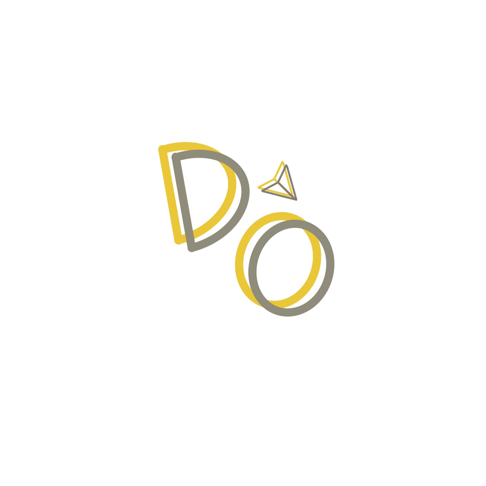

PROJECT
▶DO
Theme
DO는 Direct Order의 줄임말이며, DO는 소규모 SNS 마켓 오더링 애플리케이션입니다.
판매자는 마켓에서 판매하는 상품에 맞는 주문서를 커스터마이징할 수 있으며, 소비자는 주문서 작성과 동시에 주문하는 맞춤제작 상품의 프리뷰를 확인할 수 있습니다.
Role
이 애플리케이션 개발 시 전반적인 어플리케이션 디자인, UI설계 및 개발, DB설계 및 연결 등을 담당하였습니다.
Presentation Video
다음 링크는 발표 영상입니다. 이 어플리케이션의 구체적 설명과 실행 과정은 다음 링크에서 확인하실 수 있습니다.